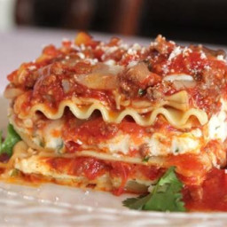

Back home

Description
This classic lasagna is made with an easy meat sauce as the base.
Layer the sauce with noodles and cheese, then bake until bubbly!
This is great for feeding a big family, and freezes well, too.
Ingredients
- Olive oil
- Ground beef
- Onion
- Bell pepper
- Garlic
- Tomato sauce
- Tomato paste
- Crushed tomatoes
- Fresh oregano
- Fresh parsley
- Italian seasoning
- Garlic powder and/or Garlic salt
- Red or white wine vinegar
- Salt
Directions
- Put pasta water on to boil
- Brown the ground beef
- Cook bell peppers, onions, garlic, and add the beef
- Transfer to medium sized pot, add tomatoes, and remaining sauce ingredients to build the sauce
- Boil and drain the lasagna noodles
- Heat oven to 375F and assemble the lasagna
- Bake for 45 mins, cool, and serve